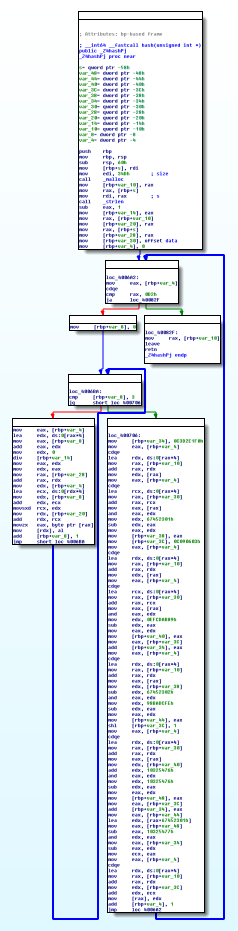

Crack the might Decryt0r and make it write a text with a flag.
Disassembling and decompiling the ELF binary reveals a main which requests user input of a <= 16 character password, and a hash subroutine which applies this password to a hard-coded data array with 211 dword entries.
//----- (0000000000400835) ----------------------------------------------------
int __cdecl main(int argc, const char **argv, const char **envp)
{
const char *v3; // rax@1
char s; // [sp+10h] [bp-10h]@1
printf("Enter Password: ");
fgets(&s, 16, stdin);
v3 = hash((unsigned int *)&s);
printf(v3);
return 0;
}
//----- (0000000000400657) ----------------------------------------------------
_BYTE *__fastcall hash(unsigned int *a1)
{
unsigned int v2; // [sp+4Ch] [bp-14h]@1
_BYTE *v3; // [sp+50h] [bp-10h]@1
signed int j; // [sp+58h] [bp-8h]@3
int i; // [sp+5Ch] [bp-4h]@1
v3 = malloc(0x34DuLL);
v2 = strlen((const char *)a1) - 1;
for ( i = 0; i <= 0xD2; ++i )
{
for ( j = 0; j <= 3; ++j )
*(&v3[4 * i] + j) = *(a1 + (4 * i + j) % v2);
*(&v3[4 * i]) = - 403835911 - ((271733878 - ((-271733879 - (*(&v3[4 * i]) & data[i])
+ 271733878) & data[i]) - 271733879 ) & (-1732584194
- ((1732584193 - (*(&v3[4 * i]) & data[i]) - 1732584194)
& *(&v3[4 * i])) + 1732584193)) + 403835910;
}
return v3;
}
For every dword of data, a 4 byte key is generated by cycling through the password, 4 byte at a time (a bit like the Vigenère cipher). This key is then applied to the data dword in a horrible looking formula. Luckily, this formula can be simplified:
operation = - 403835911 - ((271733878 - ((-271733879 - (key[i] & data[i])
+ 271733878) & data[i]) - 271733879 ) & (-1732584194
- ((1732584193 - (key[i] & data[i]) - 1732584194)
& key[i]) + 1732584193)) + 403835910
= - (
(- ((-1 - (key[i] & data[i])) & data[i]) - 1) &
(-1 - (( - (key[i] & data[i]) - 1) & skey[i]) )
) - 1
= NOT ( (NOT ((NOT (key[i] AND data[i])) AND data[i]))
AND (NOT ((NOT (key[i] AND data[i])) AND key[i])) )
= ((NOT (key[i] AND data[i])) AND data[i]) OR ((NOT (key[i] AND data[i])) AND key[i])
= ((NOT key[i]) AND data[i]) OR ((NOT data[i]) AND key[i])
= key[i] XOR data[i]
The following identities were used:
NOT a = -a-1
NOT (a AND a) = (NOT a) OR (NOT b)
a XOR b = (a AND (NOT b)) OR (b AND (NOT a))
(a OR b) AND c = (a AND c) OR (b AND c)
Finding the password is similar to solving a classical Vigenére cipher: first one determines a period at which the most "lumping" occurs in the data set. That is the likely password length. Then one looks for the key at each position by identifying the most frequent symbol, which probably corresponds to 0x20, the space.
def get_max_freq(data_set):
# find the element with the highest count
f = dict()
for c in data_set:
if c in f:
f[c] += 1
else:
f[c] = 1
max_f = sorted(f.items(), key=lambda x: x[1])[-1]
return max_f
with open("data.bin", "rb") as fh:
data = fh.read()
# For every password length
for n in range(2, 17):
freq_list = [] # List of maximum frequencies for each position
key_list = [] # List of associated keys, assuming ' ' is most frequent
# for every position
for i in range(n):
max_val, max_freq = get_max_freq(data[i::n])
freq_list.append(max_freq / len(data[i::n]))
key_list.append(chr(max_val ^ 0x20))
print(n, "{:.3f}".format(sum(freq_list) / n), key_list)
The file data.bin contains a copy of the 211 dwords of hardcoded data from the binary. The script only looks for the most frequent symbols, which is a massive simplification, but it is enough here:
2 0.040 ['n', '1']
3 0.040 ['+', '1', 'n']
4 0.049 ['\x1e', '1', 'n', '!']
5 0.050 ['1', '0', '1', '!', 'n']
6 0.045 ['=', '1', '!', '-', 'w', '1']
7 0.053 ['+', '!', "'", '+', 'n', '\x1e', '_']
8 0.053 ['\x1e', '1', 'n', '!', '+', '1', 'n', '4']
9 0.053 ['?', '1', '0', '1', '1', '<', 'x', "'", 'n']
10 0.063 ['w', 't', 't', '+', '&', '1', ' ', '1', '!', 'x']
11 0.062 ['1', '1', '\x1e', '+', '\x1e', '1', 't', 'd', '1', '!', "'"]
12 0.062 ['1', '1', '&', '\x1e', '\x1e', '1', 'n', '1', '<', '-', "'", 'n']
13 0.161 ['1', '0', 'r', '\x1e', 'w', '1', 't', 'h', '_', 'n', '4', 'n', 'd']
14 0.068 ["'", ' ', ';', '+', 'n', '\x1e', '4', '+', '!', "'", ':', '1', '1', '_']
15 0.070 ['w', "'", '1', 'd', ';', '7', '%', '-', '!', 'f', '1', '\x1e', 'd', '!', 'n']
16 0.066 ['<', '/', 'x', '!', '+', '+', '\x1b', '1', '\x1e', '_', 'q', '!', '\x1e', '1', '+', '-']
el-o,
congr(tsayou foundith$ hidden f%ag{ he19-Ehv:-y4yJ-3dyS-b8Uo
...
This is good enough to determine that positions 0 and 3 of the password are wrong and should be replaced by
'x' and '_' respectively.
The corrected password x0r_w1th_n4nd results in:
Hello,
congrats you found the hidden flag: he19-Ehvs-yuyJ-3dyS-bN8U.
'The XOR operator is extremely common as a component in more complex ciphers. By itself, using
a constant repeating key, a simple XOR cipher can trivially be broken using frequency analysis.
If the content of any message can be guessed or otherwise known then the key can be revealed.'
(https://en.wikipedia.org/wiki/XOR_cipher)
'An XOR gate circuit can be made from four NAND gates. In fact, both NAND and NOR gates are
so-called "universal gates" and any logical function can be constructed from either NAND logic
or NOR logic alone. If the four NAND gates are replaced by NOR gates, this results in an
XNOR gate, which can be converted to an XOR gate by inverting the output or one of the inputs
(e.g. with a fifth NOR gate).'
(https://en.wikipedia.org/wiki/XOR_gate)